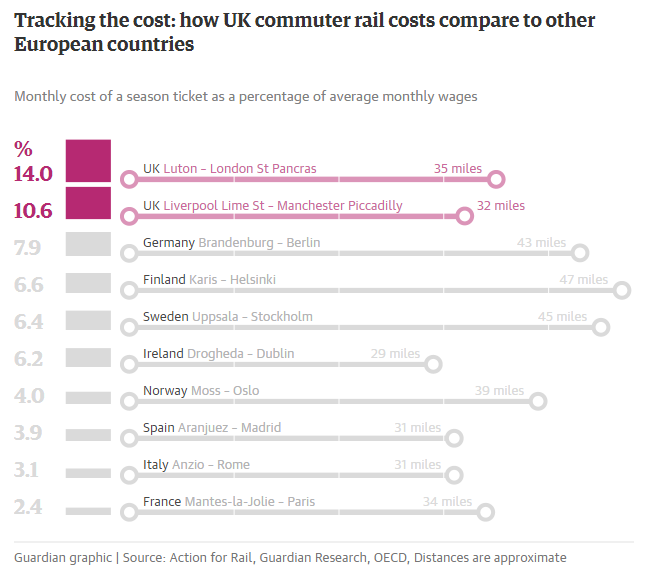
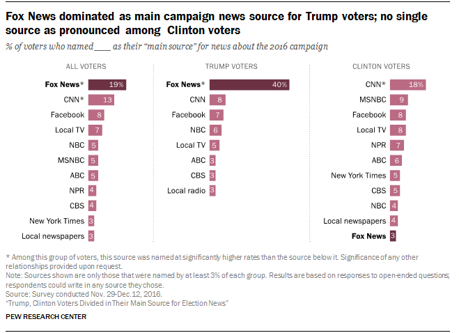

Issue: How perecentage data in news causes misleading?
- Sample 1
- Why the travel kilometers compared are different from each country
At the first glance, UK's monthly travel fee seems to be much higher than any other European countries, but a closer look may reveal a different result. Several countries have at least 10 miles' difference in the comparison, which makes the contract on price not strong enough to tell the story that "within the same or similar travel distance, the monthly ravel fee of UK is the highest in Europe".
- The color may be misleading
It is easy understood that the author use the much heavier color on UK in order to emphasis and constract the country from others. However, this may cause misleading impression about the differences between UK and others. As the data shows, there is only a 2.7 per cent difference between "UK Liverpool Lime St - Manchester Piccadilly" and "Germany Brandenburg - Berlin". Same differences occures between Ireland and Norway, yet they are not highlighted in different color. In other words, the color emphasis made the raletively normal gap of price looks larger.
- What about the relative distence of different destinations in different cities?
As cities are not the same size, some may be bigger, and contain a larger range's suburbs, while some may be smaller, only reaches to a certain area outside the city center. Would there be a chance, then, that for London, Luton is raltively very far away and remote, and Brandenburg is reletively closer to the city? In that case, the price differences is reasonable. This issue could be addressed in the text accmplied with the chart, but the chart could be improved to overcame this question.
- Sample 2
- Right color choices
Instead of using one single color differenciate one feature from all others, Pew Research Center used similar colors in one comparison, which states out clearly the differences yet doesn't confuse or misleading the readers.
- Meaningful cetegorization
It can be seen clearly that the author of this chart want the readers to see the source of news different political camp's voter uses for their news, that's why we can see the data of voters for Trump and Cliton are seperated. Yet the total voters' data is listed for the sake of better comparison. So the message becomes significant: most Trump voters depends on Fox News, with a percentage of 40. That number dramatically drops to only 3 per cent for cliton's voters. Yet as a whole, people who uses Fox News as their main source of news overrides others. This results shows consistance with the real president election result.
In this case, we get to taste a bit of the social deviation the USA is going through now by reviewing the source of media people choose.
See this story on: Tracking the cost: UK and European rail commuter fares compared – in data

Some questions regarding this chart:
See this story on: Trump, Clinton Voters Divided in Their Main Source for Election News
